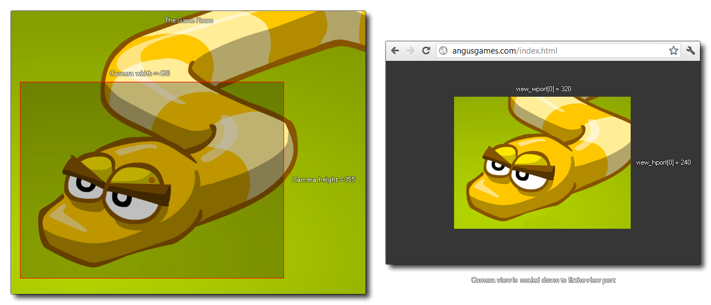

Cette variable peut être utilisée pour obtenir ou pour définir la hauteur du port de vue spécifié. La hauteur du port de vue (ou des ports de vue combinés si plusieurs sont actifs) définit la hauteur de la fenêtre de jeu ou de la toile de fond au début du jeu, donc changer cette valeur après le début du jeu n'aura aucun effet visible sur la taille de la fenêtre de jeu à moins d'être appelée avec la fonction window_set_size. Si vous avez une taille de port plus grande ou plus petite que celle assignée à la caméra, alors la vue de la caméra sera réduite - ou vers le haut - pour s'adapter, comme illustré par l'image ci-dessous.

view_hport[0 ... 7];
Integer
camera_set_view_size(view_camera[0], view_wport[0],
view_hport[0]);
Le code ci-dessus définit la largeur et la hauteur de la vue de la caméra comme étant la même que la largeur et la hauteur du port de vue.